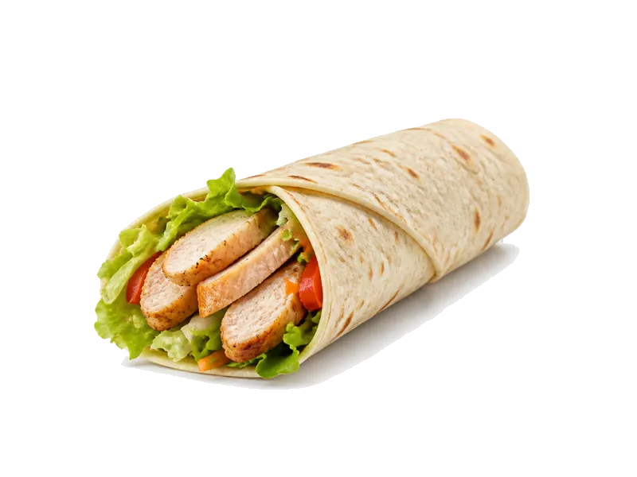

Fast food
Wrap z kurczakiem
Wrap z kurczakiem: 13 g białka, 210 kcal, 24 g węglowodanów i 7 g tłuszczu na 100 g. Kategoria: Fast food.
Kalorie210 kcalna 100 g
Białko / proteiny13 g
Węglowodany24 g
Tłuszcz7 g
Cena (szac.)~4,13 złza 100 g
Ceny zaktualizowano: maj 2026 (szacunek — ceny w popularnych supermarketach)
Porcja: sztuka (220g)
| Kalorie | 462 kcal |
|---|---|
| Białko | 28.6 g |
| Węglowodany | 52.8 g |
| Tłuszcz | 15.4 g |
| Cena (szac.) | ~9,09 zł |
Szczegółowe składniki odżywcze na 100 g
| Wartość energetyczna (kalorie) | 210 kcal |
|---|---|
| Białko (proteiny) | 13 g |
| Węglowodany | 24 g |
| Tłuszcz | 7 g |
| Tłuszcze nasycone | 2 g |
| Tłuszcze nienasycone | 5 g |
| Witaminy i minerały | Sód, Żelazo, Witamina B1 |
| Współczynnik kcal / 1 g białka | 16.2 |
| Cena produktu (szac. za 100 g) | ~4,13 zł |
| Cena za 100 g białka (szac.) | ~31,78 zł |